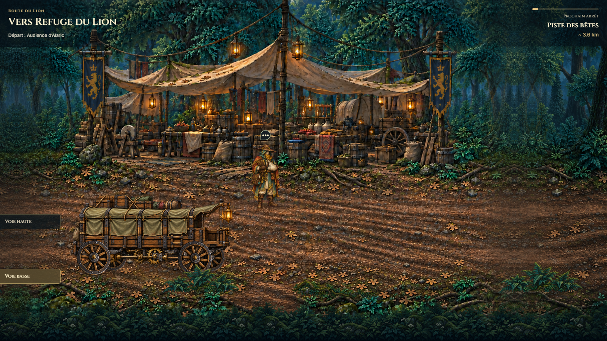

Traversal T0 · Caravane et profondeur
Revue locale sur la base 7cfccfe. La sélection artistique est fondée sur la comparaison dans le jeu. Les résultats des contrôles sont conservés séparément ; cette galerie n’est pas une déclaration automatique de validation.
Trois silhouettes comparées dans T0
Caravane retenue et profondeur réelle
Le wagon mécanique renforcé associe une longue caisse de voyage, une cabine ouverte vide et une transmission visible. Les quatre roues tournent séparément. Les fougères occupent un plan devant les acteurs ; les marqueurs restent au-dessus.

Défilement et changements de voie
Revue de présentation : positions échantillonnées sur toute la route, puis changements de voie et preuve humaine réservée au QA. Les parcours de jeu complets ci-dessous vérifient séparément les interactions.
Parcours complets du jeu
Traçabilité et vérifications